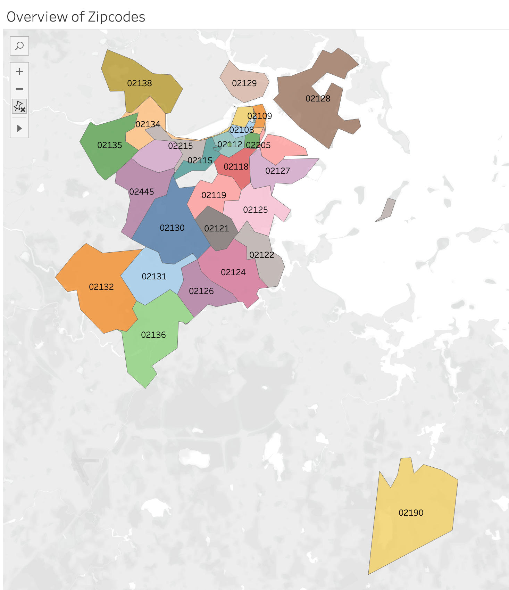

Subtheme: Housing For The Rich
Table of Contents
- Dataset Overview
- Initial Data Exploration
- Overall Analysis Questions
- Discoveries & Insights
- Summary
- Housing Glossary
Dataset Overview
Dataset: Residential Sales Data in the City of Boston, 2000-2023.
Boston Globe Article: Reckoning with Boston’s Towers of Wealth
This dataset includes the following metadata:
One data quality issue is that there are fields that are left blank, or response types, specifically for the Housing Usage column name, that are worded differently, but represent the same thing. This will cause the data to be more spread out, so I tried to be cognizant when using this field.
Initial Data Exploration
Before I explored my initial analysis questions, I needed to understand the general overview of the dataset. First, I decided to display the zip codes to understand where the different neighborhoods were. As expected, the majority of the zip codes were in Boston, with one zip code, 02138, belonging to Cambridge, and 02190 belonging to South Weymouth.
Then, I wanted to get an overview of the amount of rooms in different properties to see if it matched my intuition. I compared the average amount of bathrooms, bedrooms and total rooms for each property. The visual below is only a snapshot of this investigation, as there were many other property types. A good sign was that for any of the residencies, the total amount of rooms always equaled or surpassed the amount of bathrooms and bedrooms combined. A problematic sign was that the “2-5 Family Residence” had on average only one bathroom, one bedroom, and one total room. This immediately jumps out in the visual as the column order increases from “1 Family Residence” to “3 Family Residence” and I would have expected the rooms to linearly grow. After looking through the dataset, I found that there was only one entry that used “2-5 Residence” so I removed it from all future investigations and it was not representative of Housing Usage types. Exploring the housing usage type was incredibly important to understand, prior to diving in to deeper questions, because it showed that many Housing Usage names might be duplicates of each other. For example, the Housing Usage list includes “condominium”, “condo parking-residential”, “condominium storage”, “condominium building”, “dock condominium”, “condo parking-commercial”, “office condo unit”, “medical condo unit”, “retail condo”, “condominium/motel”, “non-residential condo”, and “industrial condominium”. All of which could have been represented under one common name. Another example is that “Frat Organization” is separate from “Frat/Sorority” but there clearly should be overlapping data.
Then I was curious to further see what types of property Boston had and which were the most popular. From the chart below condominiums make up the majority of properties, with 1 family residences and 4-8 unit apartments following next. Condominiums are 35 times as big as the next closest property type, so this is definitely an area I wanted to further explore to make sense of this value.
I then needed to understand the general pricing for each of these property types. I graphed the average price for each property type and arranged them for most expensive to least expensive. The first graphic included many buildings that were not relevant for this project, so I narrowed them down in the second image. After doing this analysis, I’m interested to see how the pricing for these houses have changed over the years, and what the break down of pricing is within each category.

Lastly, what are the types of groups involved and what do they own? It seems that LLC and Trust entity investors buy and sell the most property. I was surprised to see that businesses and banks bought and sold less property, since many people claim that they are taking up all the housing, but I wonder if it is because they are buying more expensive and strategic properties (aka quality over quanitity?).

Now that I have a pretty good idea about what is in the dataset, let’s further explore my initial analysis questions and one’s raised in my general exploration.
Overall Analysis Questions
- What types of housing does Boston have and which are most actively being built?
- Which zip codes are most populated and the most expensive?
- What type of housing are different institutions buying and how often are buyers the current owner?
Discoveries & Insights
Q1) What types of housing does Boston have and which are most actively being built?
I was originally curious to learn about Boston’s housing types and how they have progressed over the years. How has the pricing changed, and has there been an increase of newer, pricier buildings? This inspiration came from the article “Reckoning with Boston’s Towers of Wealth” from the Boston Globe. With claims such as “Dozens of luxury Buildings with multimillion-dollar condos have risen across the city” I would expect to see this exact trend in the data.
First, we need to break down the 44,375 condominiums we saw in the overview exploration.
So now let’s explore when these properties were built, and then examine if their costs have changed. Based on my experience and the article, I would expect to see more luxury buildings being built in the past couple decades and being highly expensive.
Q2) Which zip codes are most populated and the most expensive?
With many expensive condos being built in the Boston area and raising rent prices (Boston Globe), I would expect to see these housing in the center of Boston. In order to test this theory, let’s map out lucrative housing and see what areas they populate.
Q3) What type of housing are different institutions buying and how often are buyers the current owner?
"Who can afford such pricey real estate? Less than 2 percent of the Boston population." (Boston Globe). Since such a small percentage of Bostonians can afford luxury real estate, I want to know who is buying all of them. My intuition is that large institutions are buying up housing and then selling them at higher prices to wealthy individuals. It would be interesting to see how new buildings mark up the price of surrounding property, but there is not information that I could use in this dataset to explore this question.
Since there are so many buyers coming from different institutions, how many properties are currently owned by the original buyers?
At this point, I realized that I had overlooked exploring family residence types as condominiums had much more data. And, I wasn't even sure how family residences differed from condominiums since they could both host families. So I made a glossary to compare the relevant housing styles, sectioned at the bottom of this report, if viewers also need clarity.
Given the current dataset, I feel like I hit a wall in further exploring question 3. So for the next part of this section I pivoted to learn the shape of housing for family residences and apartments.
Summary
In conclusion, it is evident that there is a trend towards luxury housing being built in Boston, and less emphasis on building more affordable housing. Through my visualizations I was able to see what types of housing are being built, who is buying and selling them, and what the prices are and how they have changed overtime. I did have more questions I wanted to explore involving rent prices, cheaper property being replaced with more expensive property, what the distribution of income was for families living in different property types, and what the unoccupied rate was for different types. An important lesson I learned was how to use metadata to explain the different fields in the dataset. I did have difficulty understading some fields, even with the metadata, but on the whole it made things very clear and seems like a great skill to have. Similar to lecture, I noticed that response fields may have multiple answers that reflect the same topic, so it is important to do an overview of data to make sure you are not double counting fields or that data is not unnecessarily being spread out. Lastly, I learned that picking the right visualizations is extremely important (and challenging to create) in order to convey the intended messages. I had to make multiple visualizations of the same data just to arrive at one that was clear and easy to understand. I enjoyed researching this topic and can see the importance of displaying this information in a way that's readable and informative to the public.
Housing Glossary
In conclusion, it is evident that there is a trend towards luxury housing being built in to arrive at one that was clear and easy to understand. I enjoyed researching this topic and can see the importance of displaying this information in a way that's readable and informative to the public.